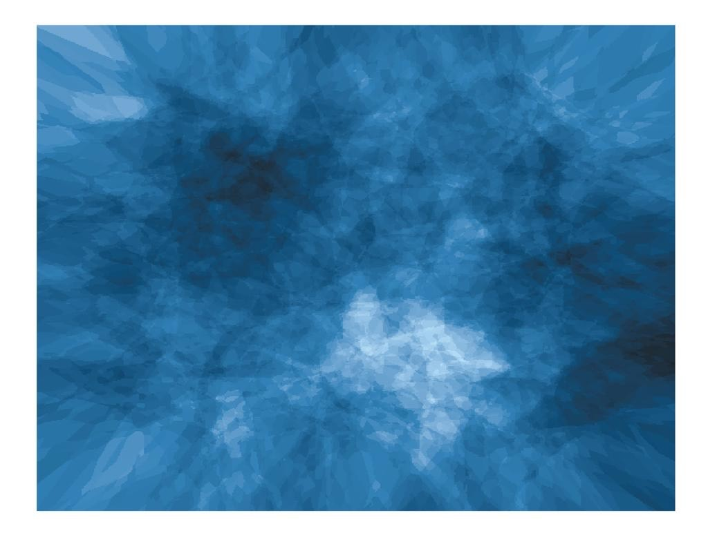

Mapping my R journey so far: ten things that I have done along the way
This blog post follows up from a talk I gave last year at coffee and coding about my experiences of learning how to code using Rstudio. Here I build on that talk to share some more reflections and advice for others who are starting out on their R learning journey.
- I faced up to my fears
I have tried to learn R a few times over several years, with mixed success. When I first tried learning it a few years ago, I only managed to learn some basics. The second time, I was going through a crisis of confidence about my ability, and so when I had difficulties with learning R, I thought it was more evidence to show that I couldn’t do it. I tried again, and got to the stage of making a plot with some of the data that was included with Rstudio. Soon after that I got swept up in the demands of everyday life, and gradually my work moved away from the world of quantitative data into qualitative research, and I had fewer opportunities to use R. Still, in the back of my mind I had this strange feeling of both wanting to avoid R, but also wondering what it would have been like if I had persisted with learning it.
A couple of years later, when I started my current job, I heard about the NHS-R community, and felt encouraged to learn R again. I tried to join my colleagues who were participating in Advent of Code. But I couldn’t understand a lot of what was going on, and when I tried to participate in some of the exercises, I immediately hit some hurdles with the basics, which was discouraging.
It seemed important to try and change my approach, so that learning R didn’t seem so daunting. I came across the aRtsy package and was amazed by the colourful and intricate artwork that it could produce. But better still, all of the code was open-source. I experimented with the code, making very small changes to see what kind of images it would create.

I also discovered colour palettes such as those in the wesanderson package, and tried experimenting with those along with the generative art functions. I soon found that my fear of R was quickly replaced by a geeky fascination with all of the beautiful artwork that could be created with only a few lines of code. It felt like a low-stakes situation, because the worst that could happen was that the code wouldn’t work. Suddenly, the process of coding felt less intimidating, and it had opened up a wealth of possibilities1.
- I found a supportive community
The great thing about R is that it is free and open source. I believe this lends itself well to a culture of shared learning. When I joined the SU’s Coffee and Coding sessions and NHS-R community’s Coffee and Code, I felt like a child asking very silly questions, but to my surprise, all of the people I have met have been keen to answer my questions. I learned to recognise and value the people in those communities who would encourage me and fellow learners by making time to answer our questions and help us learn.
- I approached learning R like I would approach learning any other language
This meant learning some of the key words and phrases, and getting exposure to the language in various ways: reading learning materials, watching tutorials, and spending time with people who were using it, and writing my own code. This had an incremental effect and over time, the more information I absorbed, the more familiar I became with the terminology.
- I set myself a goal and structured my learning to help me reach it
In my day job, I was working on a qualitative case study and wanted to illustrate my findings using geospatial and population density data in the form of a choropleth map. Unfortunately this was one of the most challenging tasks I could have chosen as an R novice, but luckily, I had kind mentors who both believed I could achieve the task and were also on hand to help me learn the skills I needed. So I set myself the goal of trying to learn how to create a choropleth map by the end of the year. This involved breaking the task down into steps, and learning skills which I could build on along the way. I celebrated my small wins, even the tiny ones, until I achieved the goals I set for myself.
- I figured out how I learn best
This involved watching tutorials on YouTube, working through books (such as R for Data Science and R for non-programmers, trying out online coding courses, using search engines and forums, and asking my colleagues and mentors for advice about what resources I should look at as well as what to avoid.
Although learning resources were plentiful, I faced some common barriers when trying to use them. Often tutorials were not always written in a way that I could reproduce the code or access the data they cited, or were written in very technical language, which meant that I had to go away and learn some key concepts to be able to understand them properly. Therefore an important part of the learning journey for me has been to gradually build up a vocabulary of words and concepts in Rstudio. This has enabled me to better understand what key concepts I need to learn, and to understand the content of any training materials or tutorials. I realised that chipping away at it, spending an hour here and there, several times a week, was the best approach for me specifically, with some bigger blocks of time set aside occasionally for more difficult tasks where I could just spend a couple of hours trying out different things or understanding the problem in more depth.
- I applied what I was learning to real data
When I became more confident with trying out some packages and functions in R, I decided to find opportunities to apply my learning to real data. I practiced using the inbuilt datasets in Rstudio, the palmerpenguins dataset, and the datasets that were referred to in the books and learning resources I was using. For creating my choropleth maps, I then used data from the UK Census as well as geographical data about local authority geographical boundaries. Applying my learning to real data was an essential step in learning some of the key data wrangling skills.
- I embraced failure and started using it as a tool for learning
Over time I understood that failure is part of the learning journey, and a helpful tool for the learning process itself. If I could figure out what didn’t work, that often gave me information about what had gone wrong. This was useful as it either pointed me towards what I needed to fix, or gave me the words and concepts I could look into to help me solve the problem. Sometimes the process of trying to learn different functions accidentally produced hilariously terrible results2
As well as providing some humour to contrast with the often frustrating process of learning to code, these failures also helped me to get unstuck. More often than not, they were a catalyst for problem-solving as they provided useful information about what specific aspect of the code had gone wrong, which would give me a clue about what I needed to look into to fix the problem.

- I looked for inspiration to encourage me to keep going
One of my worries about trying to learn R was that learning new things took more time, now I was years older than the last time I tried. But I was fairly confident that there must have been other people out there who had successfully learned how to code when they were my age or older. This led to a fascinating rabbit hole of learning about people who had successfully learned to code later in their life and the hidden history of women in coding. I bookmarked these stories so that I could revisit them on the days where I was having a difficult time understanding a particular concept or getting my code to work.
- I made it sew
Throughout my R learning journey, I have found that coding has been a useful conduit for my creativity, and similarly, my creative projects outside of work have been a catalyst for learning some key concepts related to coding3.
I realised this a few months ago when my friend got me a beginner’s embroidery kit, and as I followed the pattern and learned how to create the different types of embroidery stitch, I reflected that just like with the embroidery pattern I was working on, I needed to structure the coding for the map in layers. This led me to approach the process like I would for an art project4 to identify what I needed to do to adequately visualise both types of data that I wanted to include in the map.

- I started learning about how to stay involved in the community
As I write this, it has been over a year since I re-started my R learning journey in earnest. Early on in the journey, I remember feeling overwhelmed by the kindness and helpfulness of the community. I decided to channel these feelings into learning as best I could, so that I could then pass the learning on. I was reminded of this when I attended the most recent RPYSOC conference where I once again experienced the warm sense of collaboration and community in NHS-R and NHS.pycom. Therefore my aim for 2025 and beyond is to continue my R learning journey (and become more familiar with GitHub), so that I can give back to the wonderful communities that helped me to find my way.
Footnotes
If this topic is of interest, I would recommend getting involved in the Tidy Tuesday community activity and also having a look at Nicola Rennie’s data visualisations.↩︎
This amused me greatly, as a fan of the Terrible Maps social media pages.↩︎
This has also worked the other way around, with my R learning journey helping me with learning new crafts. I have recently begun learning sewing and dressmaking. I have quickly found that the learning journey is just as intimidating, meticulous and complicated as it was for learning R. I have also unintentionally chosen a very complicated project for a beginner, which has resulted in a very steep learning curve and lots of failures and mistakes along the way. Throughout the process, I have applied some of the same principles as I did for learning coding. For example, one of the key parts of my journey of learning sewing and dressmaking has been the process of embracing and learning from failure. This has been essential both in terms of knowing what not to do next time, but also to learn how to fix mistakes, ideally early on in a practice situation (e.g. when creating a mock-up). Luckily there is a large community of supportive fellow learners and patient mentors, who are keen to help with fixing mistakes and to pass on their knowledge to new learners. I’m pleased to say, with a lot of help (and many failures) along the way, I did eventually manage to produce three choropleth maps and submitted them with the report late last year.↩︎
Throughout the journey I have realised that thinking about the problem like an artist has been very helpful, because it allows me to use a similarly iterative approach. I wanted my choropleth maps to show both the population density and the underlying terrain when superimposed. To do this, I used the colorbrewer2 tool to test out different colour palettes, and changed the opacity and terrain to identify which colours would clearly to show the population data and the terrain underneath. The tool let me test this on an example map and showed me the hexadecimal colour codes for the colours in the palettes. Once I had found some combinations that would likely work for my particular map, I then iteratively adjusted the aesthetics in my R code until I found a combination that worked for my data. ↩︎